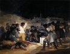
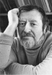

Страницы авторов "Тёмного леса"
Страница "Литературного Кисловодска
Пишите нам! temnyjles@narod.ru
Издание осуществлено за счет средств автора и в авторской редакции.
|  |
| Франсиско Гойя. Расстрел в ночь с 2 на 3 мая 1808 года. |
Requiem. (стихи)
Свидетель. (пьеса для чтения)
ПРИЛОЖЕНИЯ:
Виталий Василенко Новочеркасская школа
Виталий Василенко Красный факел
Журнал "Крытый двор" N2, 1990 г.

Станислав Подольский состоит в Союзе российских писателей и Русском ПЕН-центре, участник ассоциации писателей "Апрель".
Автор пятнадцати книг стихотворений (в том числе "Подземная река", избранные стихотворения, Новопавловск, 2003 г., "Зелёная провинция", свободные стихи, Ставрополь, 2000 г., "Нагорная страна", Кисловодск, МИЛ, 2008 г.); шести книг прозы (в том числе "Житие незнаменитого человека", Кисловодск, МИЛ, 2005 г., "В дождливых зеркалах", Кисловодск, МИЛ, 2006 г., "Побережье", Кисловодск, МИЛ, 2010 г., "Новочеркасск 1962. Свидетель", Кисловодск, МИЛ, 2010 г.).
Отзывы о книге направлять по адресу: 357748, Кисловодск, ул. Чайковского 11, кв. 2. Телефон: 8(87937) 5-49-37.
Александр Квиток. Какими мы были, какими мы стали... (статья в "Литературном Кисловодске" N40 (2010г.) о книге Ст. Подольского "Новочеркасск 1962")
Олег Воропаев. Правда не устаревает... (статья в "Литературном Кисловодске" N41 (2011г.) о книге Ст. Подольского "Новочеркасск 1962")
Станислав Подольский. Память (статья в "Литературном Кисловодске", N73 (2020г.))
Главная страница
Литературный Кисловодск и окрестности
Страница "Литературного Кисловодска"
Страницы авторов "ЛК"
Последнее изменение страницы 7 Feb 2021
{kind=link}